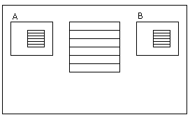

The Form.Refresh command executes a refresh of the whole web page, and causes the Start, Refresh and Load Event to be executed. It is similar to the form's implicit refresh when Web User Experience property is set to Previous Versions Compatible. SyntaxForm.Refresh() DescriptionIn general, the Form.Refresh command is used when Web User Experience property = Smooth, and we must obtain the behavior of a compatible model. Consider a web page - WEB PANEL X - containing WEB COMPONENT A, and WEB COMPONENT B, as shown in the figure below:  When a user event inside the web panel X executes the form.refresh command, the following will happen:
NoteThere is a difference between the execution of the form.refresh command in a Smooth model's web panel and the implicit refresh of a compatible model's web page. In the second one, if we use the above example, the execution will be as follows (Note that the start event of web panel X is executed before the web panel's User event):
See Also
|
| Backlinks | |
| Event Execution comparison between Smooth and compatible models | Event Execution Scheme |
| Refresh command in web | SD Component control |